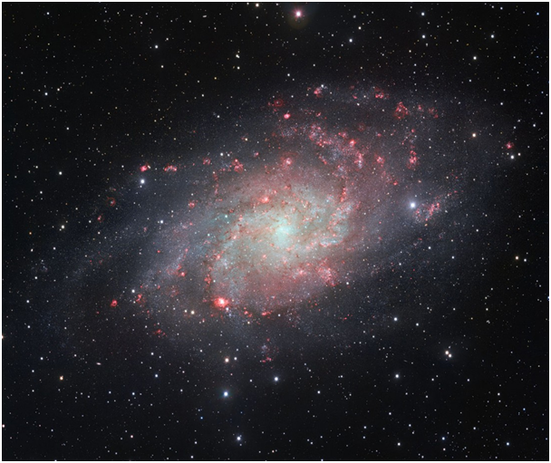
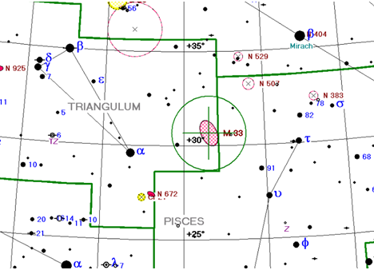
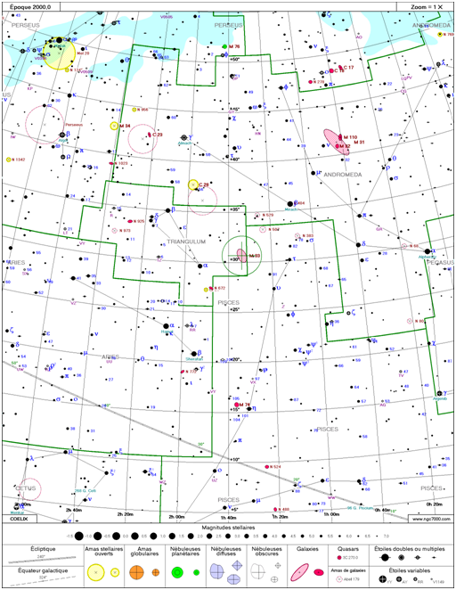
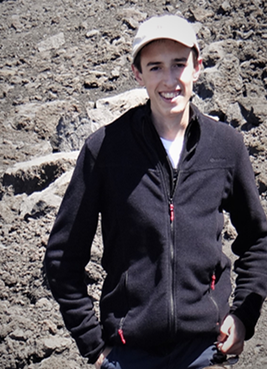
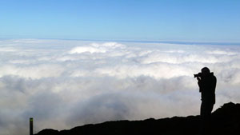
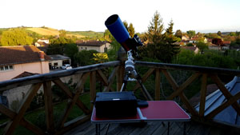

Les défis
Tous les mois, un défi est proposé aux membres de la communauté. Ce défi constitue en sorte un challenge à observer ou à photographier chaque mois avec l'instrument et les techniques de leur choix.
Les défis sont sélectionnés en fonction de l'intérêt, de la visibilité de l'objet au cours de l'année et également leur accessibilité à des instruments amateurs de diamètre modeste.
Ils sont classés avec différents niveux de difficultés de 1 à 5 :
| 1 et 2 | Pour les objets facilement visibles déjà à l'oculaire (objets de Messier) |
| 3 | Pour les objets à l'horizon ou faiblement étendues |
| 4 | Pour les objets visible à l'oculaire mais avec un filtre |
| 5 | Pour les objets uniquement visibles en photo |
Défis du mois de Novembre proposé par Gérard
La galaxie du triangle
La galaxie du Triangle, également appelée M33, est une galaxie spirale de type SA(s)cd appartenant au Groupe local et située dans la constellation du Triangle. Sans doute satellite de la galaxie d'Andromède. Les mesures actuelles donnent une distance allant d’environ 2,38 millions d'a.l. à environ 3,07 millions d'a.l..
C'est la troisième galaxie la plus massive du Groupe local après la galaxie d'Andromède et la Voie lactée, et devant le Grand Nuage de Magellan ; avec une masse évaluée à 60 milliards de masses solaires, elle ne représente que 5 % de la masse de la galaxie d'Andromède, la matière noire constituant près de 85 % de cette masse
| Constellation : | Triangle |
| Ascension droite : | 01h 33m 50,904s |
| Déclinaison : | +30° 39′35,79″ |
| Distance : | ~ 3 millions d'a.l. |
| Magnitude apparente : | 6.27 |
| Dimensions apparentes : | 70,80 ×41,7 minutes d’arc |
| Niveau de difficulté : | 1 |
A vos observations et à vos photos !
 Ci-dessous les anciens défis de l'année courante :
| Mois | Défis | Résultat |
|---|---|---|
| Janvier | la Rosette | - |
| Février | l'amas M46 | - |
| Mars | le Triplet du Lion | - |
Sites de Rendez-vous
Les sites actuels de rendez-vous pour des observations ou de la photo entre membres sont répertoriés dans cette rubrique.
Côté campagnard on a :
-
Le site de Rieux-Volvestre appelé le site de "La ruine".
-
Le site de Lapeyrere appelé le site de "L'abris bus".
-
Le site d'Esperce appelé le site du "Chateau d'eau".
Côté montagnard on a :
-
Le site de Guzet Neige appelé le site de "Beauregard".
-
Le site de Beille appelé le site du "Plateau".
Membres
Organisation 2017 |
|
| Référent | Julien LECUYER |
| Adjoint | Gérard NONNEZ |
| Membres | Jean-Marie MESSINA, Hugues ALEXANDRE, Jean-Baptiste DOUMENJOU, Christophe BOEUF, Etienne LECOQ, Alexandre NONNEZ, Bernard TOURNOIS, Bernard GERVAIS, Quentin LEMARECHAL, Céline AUTECHAUD, Jean MOUCAUD, Julien et Aurore DJOUL. |
Présentation des membres
Julien LECUYER
J'ai commencé l'astronomie vers l'âge de 10 ans en m'intéressant à La Lune et à la planète Jupiter que j'observais à travers la lucarne de la maison de mes parents à l'aide d'une petite lunette. Puis à 13 ans, l'observation de l'éclipse totale de Soleil le 11 août 1999 fût un vrai déclic pour moi car j'avais décidé de me rapprocher du club d'astronomie de ma ville (Soissons) afin de progresser et de partager ma passion avec ses membres. En 2006, après quelques années de travail et épauler par le président fondateur de mon clun et la SAF, j'ai réalisé le miroir principal de mon télescope newton de 200 mm ainsi que le tube.
Je suis principalement passionnée par les planètes, les éclipses et transits de tout type ainsi que par les comètes. J'ai fait mes premiers pas dans l'astrophotographie en 2015 avec une lunette de 85 mm et je compte approfondir ce domaine ainsi que celui de l'astrophysique.
2017, j'ai fondé la Communauté d'Astrophotographie Libre des Pyrénées qui en sorte un groupe de travail sur la photo celeste d'objet de tout type et a pour but de partager et de perfectionner les compétances de chacun des membres dans ce domaine.
Gérard NONNEZ
Depuis aussi loin que je me rappelle, j’ai toujours été attiré par les secrets de notre univers et les magnifiques photos que je voyais dans les différents livres que mes parents m’avaient achetés
J’avais pensé pour ma retraite (qui n’est pas encore pour aujourd’hui) m’équiper et me lancer dans l’astronomie, jusqu’au jour au mon fils Frédéric, alors en 4ème, nous disait qu’il souhaitait faire des études pour embrasser une carrière d’astrophysicien (je lui souhaite de réussir dans cette difficile entreprise). Ce fut le déclic pour que, en décembre 2015, nous allions pousser la porte d’un magasin d’astronomie bien connu dans la région toulousaine où nous en sommes ressorti avec un T150 skywatcher, une monture EQ3, un système GOTO (je respecte à la lettre un vieil adage d’un de mes ancien professeur d’électrotech, qui nous disait d’être fainéant), filtre solaire et une petite caméra planétaire.
Première observation solaire et planétaire dans la foulée en visuel avec beaucoup de « wouah », pourtant les premières difficultés arrivent : mise en station, utilisation de la caméra, avec mes garçons on se décide à rechercher un club. Et c’est au club du balcon des étoiles que nous avons fait un stage d’initiation à l’astronomie qui nous a été bien utile. Après cela, premières images captées avec la petite caméra, on s’essaye même au ciel profond avec les limites de notre configuration. Afin de passer du coté des astrophotographes, nous avons quelques peu améliorer notre configuration, achat d’une caméra refroidie, d’une lunette de guidage, trouver une monture NEQ6 d’occasion, essai avec l’appareil photo reflex familiale, les premières photos sont encourageantes
Depuis avec d’autres astronomes amateurs nous nous lançons des défis d’objets du ciel profond à imager, pas pour voir qui a fait la plus belle photo, juste pour notre plaisir personnel et faire partager nos images avec nos familles, nos amis, le public qui vient dans notre club. Depuis, mon deuxième fils Alexandre s’est aussi converti à l’astronomie, et devrait bientôt se lancer dans l’astrophotographie avec son propre matériel (C8 sur monture Vixen), qui entre 2 déplacements pour son travail revient dans le sud ouest pour utiliser son matériel avec la petite bande de copains passionnés d’astronomie que nous avons rencontré.
Maintenant, j’ai toujours les yeux rivés vers le ciel, mais aussi sur les applis météos, et dès que le ciel le permet, soit depuis la maison, soit avec des collègues sur nos sites d'observations, je passe mes soirées à faire des photos de ces magnifiques galaxies, nébuleuses, amas, comètes, que je regardais dans les livres, ainsi la boucle est bouclée
Etienne LECOQ
J'ai fait mes premiers pas en Astronomie vers l'âge de 20 ans avec un Newton de 115/900 sur lequel j'ai rapidement ajouté un raccord photographique. Depuis, cette passion pour la photo ne m'a jamais quitté et au fil des années j'ai évolué vers des instruments de diamètres plus importants (jusqu'à utiliser un télescope d'un 1 m d'ouverture à Puimichel) Nombre de mes images ont été publiées dans les revues d'Astronomie et j'ai également participé à l'illustration de deux ouvrages de la série Multiguides Astronomie aux Editions Bordas.
L'observation solaire est devenue ma spécialité et je ne perds jamais l'occasion de photographier taches et protubérances avec une lunette solaire dédiée Lunt. L'âge de la retraite ayant sonné, je dispose de beaucoup plus de temps pour me consacrer à la photo des galaxies , nébuleuses et amas. L'évènement de l'ère informatique a été une véritable révolution pour moi qui était habitué aux chambres noires des labos photo !!
Quentin LEMARECHAL
À mon entrée en classe de seconde, il y a trois ans, j’ai goûté pour la première fois aux joies de comprendre et maîtriser quelques notions scientifiques complexes. Ces premiers pas m’ont décidé à dérouler plus encore l’infini parchemin des sciences, ce que je n’ai eu de cesse de faire depuis lors. L’astronomie a ainsi pris naturellement une place de choix dans le carnet de mes passions qui compte, par ailleurs, la photographie mais aussi la philosophie et la poésie. Je retrouve ces deux dernières lorsque j’observe le ciel apaisant des nuits avec mon récent télescope de formule optique Newton aux 200 mm de diamètre et 1000 mm de focale sur une monture équatoriale EQ6-R Pro Go-To. Qu’y a-t-il de plus époustouflant qu’enrouler son regard autour des disques planétaires ou encore enlacer des yeux les milliards d’étoiles qu’arborent les galaxies ? Qu’y a-t-il de plus intriguant que transgresser les limites temporelles en admirant les étoiles dans leur passé et imaginer leur instant présent auquel nous sommes aveugles, en pensant à leur évolution qui pourrait conduire à des formes de vie ? Peut-être rien, peut-être une photographie. Je l’ai compris en regardant les clichés des autres membres : photographier les objets célestes est le moyen de faire apparaître les détails et couleurs que l’on ne perçoit pas par l’observation visuelle. On peut remarquer, de fait, les festons livides des nébuleuses rougir et se déployer distinctement sur une photographie. Les passionnés du club m’ont beaucoup conseillé sur mon équipement. C’est donc dans cette communauté que j’ai découvert l’astrophotographie dont je me suis épris.
La poésie précède mes oculaires, la philosophie les poursuit.


Bernard TOURNOIS
Depuis toujours j’ai été attiré par le ciel étoilé, son immensité. Contemplatif devant les magnifiques photos des livres d’astronomie. Attiré par le monde de l’image depuis longtemps à travers le court métrage, la photo et la vidéo je viens de m’équiper d’un Newton 200 et d’une monture HEQ5. Je suis à la retraite depuis quelques années et un débutant qui espère progresser en astrophotographie auprès des astronomes chevronnés de la communauté et réussir de belles images sur le ciel profond et les planètes.


Hugues ALEXANDRE
Comprendre l’infiniment petit pour comprendre l’infiniment grand, that is the question ? A 21 ans j’ai durant 11 ans côtoyer l’infiniment petit (protons, neutrons, électrons) au sein d’un accélérateur de particules à ions lourds. L’astronomie m’a fait basculer dans l’infiniment grand qui est constitué des actions de l’infiniment petit et de ses effets. Plusieurs passions depuis l’adolescence m’animent toujours comme observer, partager, transmettre, immortaliser l’instant. J’ai commencé l’astronomie avec une paire de jumelles 7x50 Nikon que j’ai toujours et fabriqué un adaptateur afin de les stabiliser sur mon pied photographique. J’ai commencé à observer depuis chez moi. Ces jumelles m’ont permis de découvrir les 4 principaux satellites de Jupiter et quand la météo est bonne de distinguer les bandes nuageuses. J’ai pu également distinguer Saturne, observer la comète Hale-Bopp en 1997 et découvrir des particularités du ciel comme la constellation du cintre non visible à l’œil nu, les joyaux de la voie lactée et de notre ciel. Un jour, dans un dépôt vente, j’ai trouvé une lunette d’astronomie PERL-VIXEN 76/900mm qui avait peu servit, mais était dans un état moyen. Je l’ai nettoyé et cessé de l’améliorer au fil du temps, changement de la monture, du porte oculaire et des oculaires (il ne reste que le tube et le groupe optique).Ce fut mon 1er véritable instrument d’astronomie. Il m’a permis de voir les anneaux de Saturne et avec un filtre solaire (obligatoire), j’observe le soleil. C’est avec cet instrument que j’ai commencé à immortaliser mes premières photos d’astronomie (éclipse de lune de 2015 qui est exposé à la Cité de l’espace de Toulouse). Elle m’a permis de partager, et transmettre le plaisir d’observer lors de manifestation grand public (Ciel en fête, la nuit des étoiles…). Entendre le public dire, j’en reviens pas, c’est super, j’y crois pas…, elle parait si loin et si proche dans l’instrument…, ces propos ne font que renforcer l’envie de partager. Montrer le soleil et transmettre la notion que notre monde qui parait si grand estsi petit à l’échelle du soleil, de notre galaxie et poussière à l’échelle du cosmos. Ces notions étonnent petit et grand et renforce encore ce plaisir de transmettre. Aujourd’hui j’ai décidé d’aller plus loin je me suis équipé d’un celestron C8 que j’ai complété d’accessoires (chercheur, caméra de suivi, Crayford, ordinateur…) pour y faire des photographies avec de long temps de pose et une exigence de qualité. Grace à cet instrument et l’aide des ALP (les Astronomes Libres des Pyrénées), je vais aller plus loin et associer 3 plaisirs astronomiques, le visuel, l’astrophotographie et le partage des connaissances, en plus de l’amitié qui existe dans ce jeune groupe née en septembre 2017. Mon C8 en plus d’être peut encombrant va permettent grâce à l’astrophotographie de capter les couleurs des objets du ciel profond que l’œil ne capte pas. Mais tout commence par la maitrise du pilotage de l’instrument, la compréhension de la technologie et du fonctionnement des logiciels, surtout quand on change pour un instrument plus puissant.
Nous rejoindre
La communauté est articulée d'une part autour de ce site internet qui présente les travaux de ces membres et permettent au débutant de se former à l'aide de tutos. Un forum de discussion est également créé pour partager ses exploits ou demander des informations. Enfin une liste de diffusion pour organiser des soirées ou ateliers (traitement, construction...) entre membres.
L'inscription à cette communauté est gratuite, il suffit de satisfaire aux conditions suivantes :
- être passionné(e) par l'Astronomie et l'Astrophotographie, ça s'est la base ;-)
- faire partie de la région Occitanie en particulier dans le Midi Toulousain, c'est mieux pour facilité les rencontres entre les membres.
- avoir envie de partager et d'apprendre pour aller plus loin dans et l'observation et l'astrophotographie.
- Puis d'envoyer les renseignements suivants par mail : nom, prénom, localité et matériels d'astronomie.